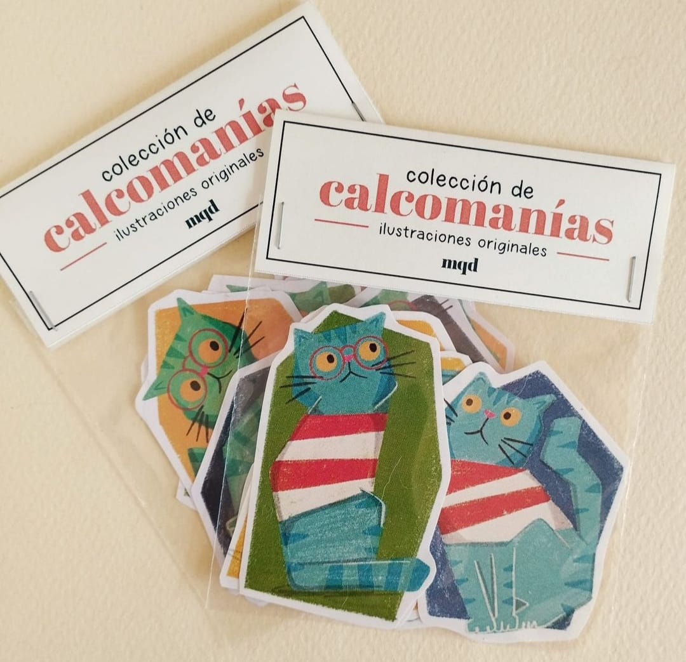
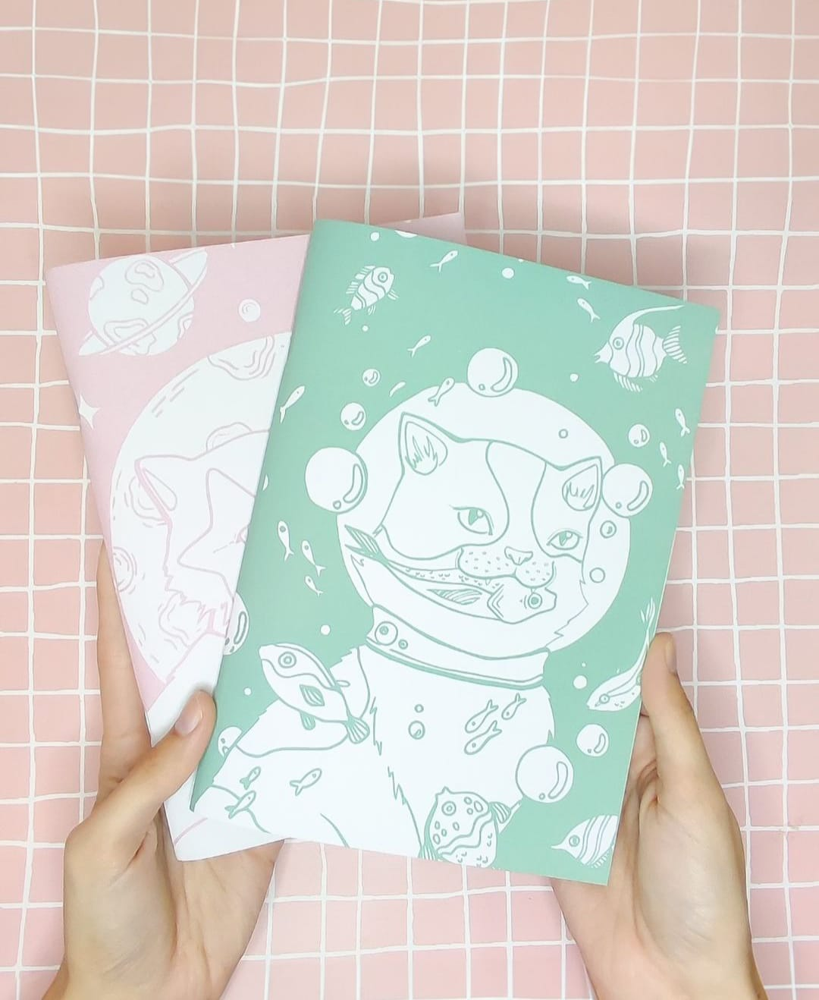

Kitty Feria
Temática 100% Gatuna
La Feria Felina es un evento anual muy esperado por todos los amantes de los gatos. Este año, el recinto ferial se ha transformado en un paraíso para los felinos y sus dueños. Desde el primer momento, los visitantes se sumergen en un ambiente lleno de energía y entusiasmo, donde cada rincón está diseñado para satisfacer las necesidades y gustos de los gatos y sus humanos.
 Atractivos que encontrarás!
Al ingresar, son recibidos por una variedad de puestos coloridos que ofrecen todo tipo de productos para
gatos. Desde rascadores innovadores hasta camas ultra cómodas, cada stand está repleto de artículos que
prometen hacer la vida de los felinos más placentera. Los fabricantes locales y nacionales muestran sus
últimas creaciones, destacando desde juguetes interactivos hasta comederos automáticos que facilitan la
vida diaria.
Uno de los grandes atractivos de la feria es el área dedicada a la salud y el bienestar
de los gatos. Veterinarios y expertos en nutrición felina están disponibles para ofrecer consejos y
responder preguntas sobre cómo mantener a los gatos saludables y felices. También se realizan charlas y
talleres sobre temas como el cuidado dental, la prevención de enfermedades y la importancia de una dieta
equilibrada.
Más Eventos!
los visitantes pueden disfrutar de una serie de espectáculos y demostraciones en vivo. Desfiles de gatos, competencias de trucos y exhibiciones de habilidades felinas son parte del entretenimiento que la feria ofrece. Estos eventos no solo muestran las destrezas y talentos de los gatos, sino que también celebran su agilidad y belleza.
La feria también cuenta con una amplia gama de alimentos y golosinas para gatos, incluyendo opciones gourmet y saludables. Los propietarios pueden explorar diferentes marcas y sabores, y llevarse a casa nuevos manjares que seguramente serán del agrado de sus felinos. Las degustaciones y muestras permiten a los asistentes probar antes de comprar, asegurando la mejor calidad para sus mascotas.
Todavía estás dudando si venir?
Para concluir el evento, se realizan sorteos y concursos con premios atractivos tanto para los gatos como para sus dueños. Estos premios pueden incluir desde cestas de productos hasta sesiones de spa para gatos, lo que añade un toque extra de emoción a la feria. La posibilidad de ganar es solo una de las muchas razones por las que los visitantes se sienten entusiasmados y satisfechos con su experiencia.
La Kitty Feria es mucho más que un simple evento de compras; es una celebración del vínculo especial entre los gatos y sus dueños. Con una combinación de productos innovadores, educación, entretenimiento y oportunidades de adopción, la feria ofrece una experiencia enriquecedora para todos los amantes de los felinos.
Contacto:
Dejanos tu comentario!